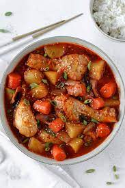

Dakdoritang Recipe

Description
Now this is a meal! Spicy and sweet and savory to satisfy all cravings. Make the meal with the recipe below and then let all your worries melt away
Ingredients
- Chicken
- Potatoes
- Carrot
- Garlic Cloves
- Ginger Pieces
- Scallions
- Gochujang
- Gochugaru
- Sugar
- Soy Sauce
- Sesame Oil
- Sesame Seeds
Steps
- Prepare the vegetables by cutting up in big chunks
- Add 1.5 cups water to a large pot along with the chicken and the sauce (except the sesame oil and sesame seeds). Stir well. Bring it to a boil over high heat. Reduce the heat to medium and cook, covered, for 15 minutes, stirring occasionally.
- Stir in the vegetables (except the scallions). Cover, and cook for an additional 10 minutes, stirring occasionally.
- Continue to cook, uncovered this time, until the chicken is tender and the sauce is slightly thickened, about 5 minutes. Stir in the scallions, optional chili pepper, sesame oil and sesame seeds right before turning off the heat.